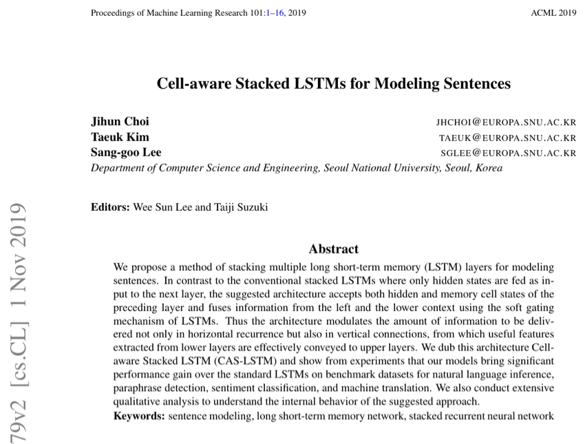

은닉 상태뿐 아니라 셀 상태까지 레이어 간에 소프트 게이팅으로 전달하는 새로운 적층 LSTM 아키텍처를 제안하여, 자연어 추론, 패러프레이즈 탐지, 감성 분류, 기계 번역 등 다양한 태스크에서 문장 모델링 성능을 향상시킨 연구.

Long Short-Term Memory(LSTM) 네트워크는 시퀀스 모델링의 핵심 구조이며, 여러 LSTM 레이어를 쌓는(stacking) 방식은 더 강력한 모델을 구축하는 표준 기법으로 자리 잡았습니다. 기존의 적층 LSTM에서는 각 레이어가 아래 레이어의 은닉 상태(hidden state) 시퀀스를 입력으로 받아 새로운 은닉 상태 시퀀스를 생성합니다. 이러한 수직적 구성을 통해 상위 레이어에서 점점 더 추상적인 표현을 학습할 수 있습니다.
그러나 이 아키텍처에는 정보 흐름의 비대칭성이 존재합니다. 단일 레이어 내에서는 두 종류의 상태가 유지됩니다: 레이어의 출력으로 사용되는 은닉 상태 h와 장기 의존성을 포착하는 내부 메모리인 셀 상태 c입니다. 레이어를 쌓을 때 은닉 상태만 상위 레이어로 전달되고, 셀 상태는 각 레이어 내부에 완전히 격리됩니다. 이는 하위 레이어의 셀 상태에 축적된 풍부하고 필터링되지 않은 메모리가 상위 레이어에서는 전혀 접근할 수 없다는 것을 의미하며, 모든 레이어 경계에서 정보 병목(information bottleneck)을 만들어냅니다.
핵심 통찰: 기존 적층 LSTM에서 상위 레이어는 하위 레이어의 출력 게이트를 통해 필터링된 은닉 상태만 볼 수 있으며, 원시 셀 상태는 볼 수 없습니다. 출력 게이트가 노출할 정보를 선택적으로 필터링하기 때문에, 하위 레이어 셀 상태에 저장된 잠재적으로 유용한 장기 메모리 신호가 수직 전파 과정에서 손실됩니다. Cell-aware Stacked LSTM(CAS-LSTM)은 학습된 소프트 게이팅 메커니즘을 통해 하위 레이어의 셀 상태를 상위 레이어 연산에 명시적으로 통합함으로써 이 문제를 해결합니다.
다층 RNN을 개선하기 위한 기존 접근법들은 레이어 간 잔차 연결(residual connection)이나 하이웨이 연결(highway connection)에 초점을 맞추었지만, 이들은 은닉 상태에만 작용합니다. 저자들은 셀 상태가 은닉 상태와는 근본적으로 다른 상보적 정보를 담고 있으며, 이 정보를 레이어 간에 활용하면 최소한의 추가 비용으로 더 나은 표현을 얻을 수 있다고 주장합니다.
핵심 아이디어는 표준 적층 LSTM을 수정하여 각 레이어가 아래 레이어의 은닉 상태와 셀 상태를 모두 받고, 소프트 게이팅 메커니즘을 통해 두 정보 소스를 융합한 후 자체 게이트를 계산하도록 하는 것입니다. 이 방법은 두 가지 핵심 요소를 도입합니다:
CAS-LSTM은 네 가지 주요 NLP 태스크에서 평가되었으며, 표준 적층 LSTM 및 기타 경쟁 베이스라인과 비교됩니다. 모든 실험에서 LSTM 아키텍처만 다르고 동일한 하이퍼파라미터와 학습 절차를 사용합니다.
| 모델 | 테스트 정확도 (%) |
|---|---|
| 300D Stacked LSTM | 86.0 |
| 300D Gumbel TreeLSTM | 86.0 |
| 300D SPINN-PI | 86.6 |
| 300D CAS-LSTM (제안 모델) | 86.8 |
| 600D Stacked LSTM | 86.6 |
| 600D Residual Stacked LSTM | 86.4 |
| 600D CAS-LSTM (제안 모델) | 87.1 |
| 모델 | 테스트 정확도 (%) |
|---|---|
| Stacked LSTM | 86.5 |
| BiMPM | 88.2 |
| CAS-LSTM (제안 모델) | 87.2 |
| 모델 | 세밀 분류 (%) | 이진 분류 (%) |
|---|---|---|
| Stacked LSTM | 50.3 | 87.8 |
| Tree-LSTM | 51.0 | 88.0 |
| CAS-LSTM (제안 모델) | 51.5 | 88.8 |
| 모델 | BLEU |
|---|---|
| 표준 LSTM 인코더 | 24.6 |
| CAS-LSTM 인코더 (제안 모델) | 25.2 |
본 연구는 다층 LSTM 설계에서 흔히 간과되는 근본적인 비대칭성을 발견하고 해결합니다: 은닉 상태는 레이어 간에 자유롭게 흐르지만, 핵심적인 장기 메모리를 담고 있는 셀 상태는 각 레이어 내에 격리되어 있다는 점입니다. 간단한 소프트 게이팅 메커니즘을 도입하여 레이어 간에 셀 상태를 공유함으로써, CAS-LSTM은 최소한의 추가 파라미터로 다양한 NLP 태스크에서 일관된 성능 향상을 달성합니다.
그 의의는 특정 아키텍처를 넘어섭니다. 본 논문은 근본적으로 다른 아키텍처(Transformer나 트리 구조 모델 등)에 의존하지 않고도, 심층 순환 신경망에서의 정보 흐름에 대한 세심한 주의만으로 의미 있는 성능 향상을 얻을 수 있음을 보여줍니다. CAS-LSTM의 드롭인 특성은 즉각적인 실용성을 제공합니다: 적층 LSTM을 사용하는 모든 시스템이 학습 파이프라인의 변경 없이 이 수정의 혜택을 받을 수 있습니다. 또한 이 접근법은 심층 RNN의 레이어 경계에서 어떤 정보가 손실되는지에 대한 통찰을 제공하여, 더 나은 순환 아키텍처 설계에 대한 이해를 넓힙니다.